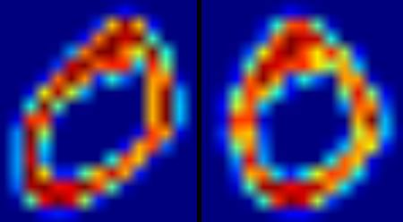

OCR of Hand-written Data using SVM
Goal
In this chapter
- We will revisit the hand-written data OCR, but, with SVM instead of kNN.
OCR of Hand-written Digits
In kNN, we directly used pixel intensity as the feature vector. This time we will use Histogram of Oriented Gradients (HOG) as feature vectors.
Here, before finding the HOG, we deskew the image using its second order moments. So we first define a function deskew() which takes a digit image and deskew it. Below is the deskew() function:
def deskew(img): m = cv2.moments(img) if abs(m['mu02']) < 1e-2: return img.copy() skew = m['mu11']/m['mu02'] M = np.float32([[1, skew, -0.5*SZ*skew], [0, 1, 0]]) img = cv2.warpAffine(img,M,(SZ, SZ),flags=affine_flags) return img
Below image shows above deskew function applied to an image of zero. Left image is the original image and right image is the deskewed image.
Next we have to find the HOG Descriptor of each cell. For that, we find Sobel derivatives of each cell in X and Y direction. Then find their magnitude and direction of gradient at each pixel. This gradient is quantized to 16 integer values. Divide this image to four sub-squares. For each sub-square, calculate the histogram of direction (16 bins) weighted with their magnitude. So each sub-square gives you a vector containing 16 values. Four such vectors (of four sub-squares) together gives us a feature vector containing 64 values. This is the feature vector we use to train our data.
def hog(img): gx = cv2.Sobel(img, cv2.CV_32F, 1, 0) gy = cv2.Sobel(img, cv2.CV_32F, 0, 1) mag, ang = cv2.cartToPolar(gx, gy) bins = np.int32(bin_n*ang/(2*np.pi)) # quantizing binvalues in (0...16) bin_cells = bins[:10,:10], bins[10:,:10], bins[:10,10:], bins[10:,10:] mag_cells = mag[:10,:10], mag[10:,:10], mag[:10,10:], mag[10:,10:] hists = [np.bincount(b.ravel(), m.ravel(), bin_n) for b, m in zip(bin_cells, mag_cells)] hist = np.hstack(hists) # hist is a 64 bit vector return hist
Finally, as in the previous case, we start by splitting our big dataset into individual cells. For every digit, 250 cells are reserved for training data and remaining 250 data is reserved for testing. Full code is given below, you also can download it from here :
import cv2 import numpy as np SZ=20 bin_n = 16 # Number of bins affine_flags = cv2.WARP_INVERSE_MAP|cv2.INTER_LINEAR def deskew(img): m = cv2.moments(img) if abs(m['mu02']) < 1e-2: return img.copy() skew = m['mu11']/m['mu02'] M = np.float32([[1, skew, -0.5*SZ*skew], [0, 1, 0]]) img = cv2.warpAffine(img,M,(SZ, SZ),flags=affine_flags) return img def hog(img): gx = cv2.Sobel(img, cv2.CV_32F, 1, 0) gy = cv2.Sobel(img, cv2.CV_32F, 0, 1) mag, ang = cv2.cartToPolar(gx, gy) bins = np.int32(bin_n*ang/(2*np.pi)) # quantizing binvalues in (0...16) bin_cells = bins[:10,:10], bins[10:,:10], bins[:10,10:], bins[10:,10:] mag_cells = mag[:10,:10], mag[10:,:10], mag[:10,10:], mag[10:,10:] hists = [np.bincount(b.ravel(), m.ravel(), bin_n) for b, m in zip(bin_cells, mag_cells)] hist = np.hstack(hists) # hist is a 64 bit vector return hist img = cv2.imread('digits.png',0) if img is None: raise Exception("we need the digits.png image from samples/data here !") cells = [np.hsplit(row,100) for row in np.vsplit(img,50)] # First half is trainData, remaining is testData train_cells = [ i[:50] for i in cells ] test_cells = [ i[50:] for i in cells] deskewed = [map(deskew,row) for row in train_cells] hogdata = [map(hog,row) for row in deskewed] trainData = np.float32(hogdata).reshape(-1,64) responses = np.repeat(np.arange(10),250)[:,np.newaxis] svm = cv2.ml.SVM_create() svm.setKernel(cv2.ml.SVM_LINEAR) svm.setType(cv2.ml.SVM_C_SVC) svm.setC(2.67) svm.setGamma(5.383) svm.train(trainData, cv2.ml.ROW_SAMPLE, responses) svm.save('svm_data.dat') deskewed = [map(deskew,row) for row in test_cells] hogdata = [map(hog,row) for row in deskewed] testData = np.float32(hogdata).reshape(-1,bin_n*4) result = svm.predict(testData)[1] mask = result==responses correct = np.count_nonzero(mask) print correct*100.0/result.size
This particular technique gave me nearly 94% accuracy. You can try different values for various parameters of SVM to check if higher accuracy is possible. Or you can read technical papers on this area and try to implement them.
Additional Resources
Exercises
- OpenCV samples contain digits.py which applies a slight improvement of the above method to get improved result. It also contains the reference. Check it and understand it.